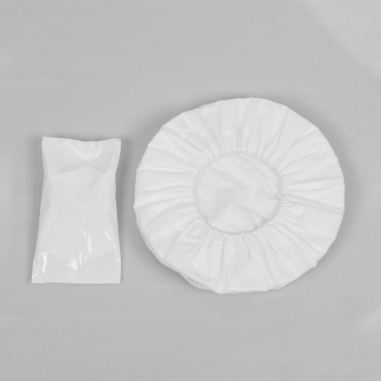

If you walked through a modern hospital and counted every disposable product in use — gloves, gowns, masks, drapes — you would likely overlook one of the simplest and most frequently used items: the disposable shower cap. It is small, lightweight, and costs pennies per unit. Yet across inpatient wards, surgical suites, beauty therapy rooms, and long-term care facilities, disposable shower caps play a surprisingly broad and critical role in patient hygiene, infection prevention, and staff comfort.
This guide explores why disposable shower caps deserve more attention in clinical procurement, the different types available, and how to select the right product for each application.
Where and Why Shower Caps Are Used in Healthcare
Patient Bathing and Hygiene
For bedbound or mobility-limited patients, regular bathing is a fundamental care activity that supports skin health, dignity, and psychological well-being. Bedside sponge baths and assisted showering are routine in hospitals, nursing homes, and rehabilitation centers. A disposable shower cap keeps the patient's hair dry during washing, prevents soap and shampoo from running onto the face and neck, and gives the patient a sense of normalcy during what can otherwise be an uncomfortable experience.
For elderly patients and those with chronic conditions, hair washing frequency may be limited. A shower cap allows caregivers to wash the body without wetting hair that cannot be easily dried — particularly important for patients with reduced mobility or those who are vulnerable to chills and respiratory infections after bathing.
Surgical and Sterile Environments
In operating theatres, delivery rooms, and clean rooms, complete hair containment is a baseline requirement for anyone entering the space — surgeons, nurses, anaesthetists, and support staff alike. Hair sheds constantly, and loose hairs or dander can compromise sterile fields, contaminate surgical sites, and introduce foreign particles into sensitive procedures.
Surgical bouffant caps — a close cousin of the standard shower cap — are designed with an elastic band that fully encloses the head, covering not just hair but also the ears and, ideally, the neckline. They are available in both sterile and non-sterile variants depending on the clinical area.
Dermatology and Wound Care
Patients undergoing scalp treatments, dermatological procedures, or wound care on the head and neck area often benefit from a shower cap that protects treated areas from water, ointments, and dressings. In burn units, where skin on the scalp may be particularly fragile, a soft nonwoven cap provides gentle protection without adhering to healing tissue.
Maternity and Postpartum Care
New mothers in postpartum wards frequently shower after delivery. A shower cap is a small but thoughtful inclusion in postpartum care kits, helping new mothers maintain hygiene and comfort during a physically demanding recovery period. In many cultures, traditional postpartum practices emphasize keeping the head warm and dry — a disposable shower cap accommodates both clinical hygiene needs and cultural preferences.
"We started including disposable shower caps in every patient admission kit two years ago. The cost is negligible, but the patient feedback has been overwhelmingly positive — especially among elderly patients who find assisted bathing more comfortable when their hair stays dry." — Head Nurse, Geriatric Ward, Provincial Hospital, Nanjing
Materials and Construction
PP Nonwoven
Polypropylene (PP) nonwoven fabric is the most common material for disposable shower caps in healthcare settings. It is lightweight, breathable, and soft against the skin. PP nonwoven is also water-resistant — not fully waterproof, but sufficient to keep hair dry during typical bedside bathing. The material is inexpensive to manufacture, recyclable in some markets, and breaks down more readily than plastic alternatives.
PP+PE Laminated
For applications where greater water resistance is needed — such as assisted showering with running water rather than sponge bathing — PP+PE laminated caps add a thin polyethylene layer to the nonwoven base. This provides a more effective moisture barrier while retaining the softness and breathability of the nonwoven outer layer. These caps are ideal for patients who receive full showers rather than bed baths.
CPE (Chlorinated Polyethylene)
CPE shower caps are made from a soft, flexible plastic film that is fully waterproof. They are the most water-resistant option and are commonly used in food service, beauty salons, and industrial settings. In healthcare, CPE caps may be used in situations where maximum moisture protection is required, though they are less breathable than nonwoven options and can feel warm during extended wear.
SMS (Spunbond-Meltblown-Spunbond)
SMS nonwoven is a higher-grade material that adds a meltblown filter layer between two spunbond layers. SMS shower caps offer enhanced barrier properties and are suitable for clinical environments where both moisture resistance and particle filtration matter — such as pre-operative preparation areas or isolation wards.
Design Types
Bouffant Style
The bouffant cap is the most common design in healthcare. It features a wide, dome-shaped body with a continuous elastic band around the perimeter that secures under the chin or behind the head. Bouffant caps accommodate a wide range of hair volumes and styles — from closely cropped hair to long, thick, or braided hair. They typically come in standard sizes (21-inch, 24-inch, and 28-inch circumferences) to suit different head sizes and hair volumes.
Shower Cap with Elastic Edge
A simpler design with a gathered elastic edge that fits snugly around the hairline. These are lighter and more compact than bouffant caps, making them ideal for patient bathing kits where space and weight matter. They provide adequate coverage for most patients during bedside sponge baths.
Clip-On or Wrap-Style Caps
Some shower caps use clip or tie closures rather than elastic. These are less common in healthcare but may be used in spa and therapy settings within medical facilities, where a more adjustable fit is preferred.
Procurement Best Practices
- Match material to use case. PP nonwoven is sufficient for bedside sponge baths. PP+PE or CPE is better for full showers or situations where hair must stay completely dry. SMS is appropriate for sterile environment prep.
- Stock multiple sizes. A one-size-fits-all approach leads to poor fit — caps that are too small slip off or fail to cover all hair, while oversized caps feel loose and unprofessional. Offering at least two sizes (standard and large) improves user compliance and comfort.
- Consider packaging format. Individually wrapped caps are preferred for patient admission kits and single-use distribution. Bulk-packed caps are more economical for high-volume staff use in surgical departments where caps are consumed by the dozens per shift.
- Evaluate elastic quality. The elastic band is the most failure-prone component. Poor-quality elastic stretches out, loses tension, or snaps during use. Request samples and test the elastic's recovery after stretching to simulate real-world donning.
- Plan consumption realistically. In a 200-bed hospital, patient shower caps may be needed at a rate of 1-2 per patient per day (depending on bathing frequency and whether caps are changed between baths). Surgical departments consume caps at a rate of 1-3 per staff member per shift. Calculate monthly needs accordingly.
- Request samples before bulk orders. Softness, breathability, elastic strength, and water resistance can only be assessed hands-on. Have nursing staff and surgical teams test samples and provide feedback before committing to a supplier.
Common Mistakes to Avoid
- Underestimating volume. Shower caps are used far more frequently than most procurement teams anticipate. Every patient bath, every surgical shift, every postpartum shower — these add up quickly. Stocking based on conservative estimates leads to shortages that force staff to improvise with unsuitable alternatives.
- Choosing based on price alone. The cheapest shower caps often have weak elastic, thin material that tears during donning, or inadequate coverage. The resulting waste — from torn caps, poor coverage requiring double-capping, or patient dissatisfaction — often exceeds the upfront savings.
- Ignoring patient dignity. For patients who rely on assisted bathing, a shower cap is one of the few items that helps them feel like they are having a "real" bath rather than a clinical procedure. Soft, well-fitting caps in neutral colors contribute to a more positive care experience.
- Mixing up surgical and patient-grade caps. Surgical bouffant caps need to meet higher containment standards than patient bathing caps. Using patient-grade caps in surgical environments risks inadequate hair and particle containment, while using surgical caps for patient bathing is unnecessary over-specification.
Sustainability Considerations
Disposable shower caps are single-use products, and healthcare facilities are increasingly scrutinized for their environmental impact. PP nonwoven caps are the most environmentally responsible option among disposable materials — they are thinner, lighter, and in some markets recyclable through specialized programs. Facilities looking to reduce waste should consider:
- Specifying PP nonwoven over CPE plastic where water resistance requirements allow.
- Working with suppliers who offer recycled-content or bio-based nonwoven options.
- Ensuring that caps used in non-clinical areas (e.g., staff showers, visitor facilities) are sourced from recyclable programs where available.
- Balancing environmental goals with clinical needs — infection prevention must always take priority.
Conclusion
Disposable shower caps are a small product with a big impact across healthcare. They support patient hygiene and dignity during bathing, maintain sterile environments in operating theatres, protect treated areas during dermatological care, and accommodate cultural preferences in postpartum recovery. With the right material, size, and packaging, they are an affordable, effective, and often overlooked component of a well-stocked medical supply inventory.
Newrise Medical manufactures disposable shower caps in PP nonwoven, PP+PE laminated, CPE, and SMS materials, with elastic bands for secure fit and full hair coverage. Produced in our ISO 13485 certified facility in Changzhou, China. Contact us for samples and pricing →